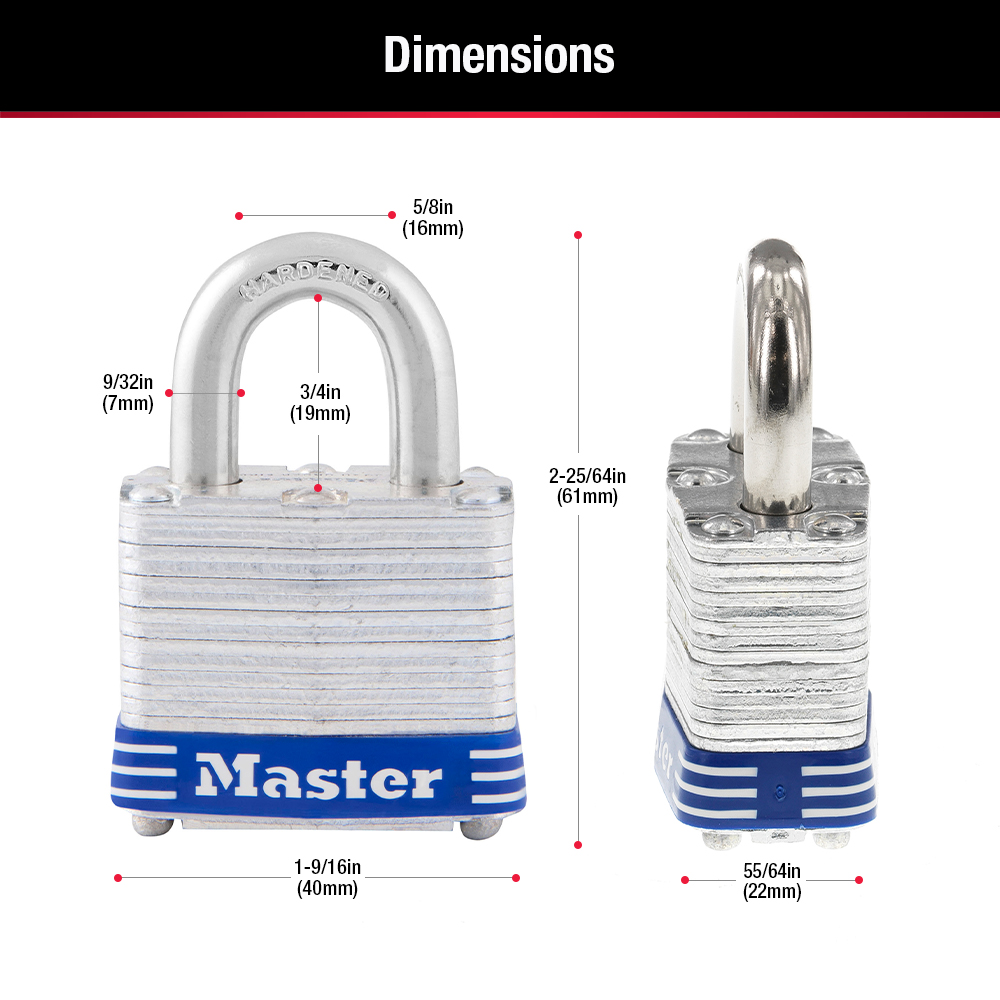
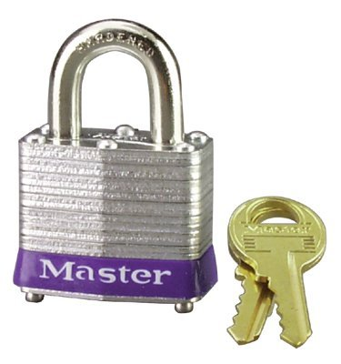

Master Lock No. 3
If somebody is learning lock picking, this is one of the first somebody can practice on and get open consistently. It’s lack of security pins makes this an easy-open for even the newest of beginners using low-skill raking attacks or improvised tools. While somewhat resistant to physical force, this lock will not stand up to any determined or prepared attacker for any significant length of time.
Specs
- Lock Name: Master Lock No. 3
- Manufactured By: Master Lock Company
- Security Level: 3
Shackle
- Material: Hardened Steel
- Retaining Mechanism: Steel Ball Bearings (springed brass locking lugs on older models)
Core Info
- Type: 4-pin tumbler
- Pinning: No security pins
- Driver Pin Material: Brass
- Key Pin Material: Brass
- Drill Resistance: None
- Removable / Can be Modified?: No
Non-destructive Vulnerabilities:
- Raking
- Zipping
- Pick Guns
- Bumping
- Impression Keys
- Single-pin picking
Destructive Vulnerabilities:
- Wrenching
- Smashing (break off shackle)
- Bolt Cutters
- Angle Grinders
- Core Drilling
Product Images

